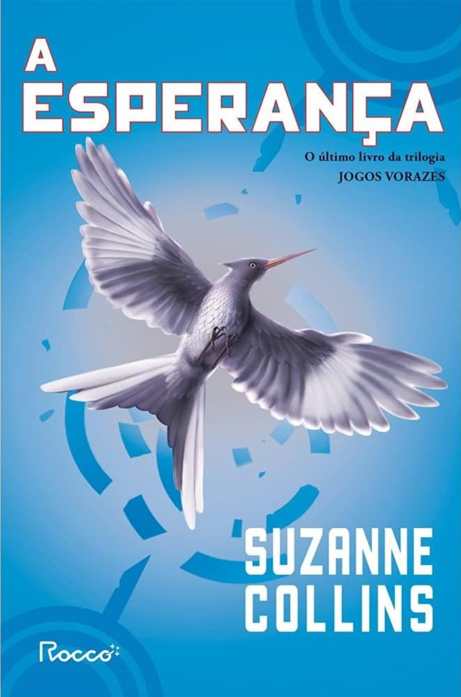

Detalhes

A ESPERANÇA - Suzanne Collins
Katniss sobreviveu duas vezes à crueldade da arena, mas agora enfrenta uma nova revolução com a chegada dos rebeldes do Distrito 13. Ela precisa aceitar seu papel como símbolo da causa rebelde, apesar dos riscos para sua família e amigos. A jornada é uma luta contra a opressão e a favor da esperança, levando Katniss ao lado mais obscuro da alma humana.
Sobre o autor:
Suzanne Collins nasceu no dia 10 de agosto de 1962, é autora e roteirista de televisão americana. Se formou na Escola de Belas Artes do Alabama em Birmingham em 1980 com especialização em Artes Cênicas. Em 1989, Collins obteve seu mestrado em Belas Artes em escrita dramática pela Tisch School of the Arts da Universidade de Nova York. Começou sua carreira em 1991 como escritora de programas de televisão infantis. Ela é mais conhecida como autora da série de livros distópicos para jovens adultos "Jogos Vorazes".

Sobre o ilustrador/Designer gráfico:
Maria Alice Paesé formada em Comunicação Social pela UFRJ e em Biblioteconomia e Documentação pela UNIRIO, tem Mestrado em Bens Culturais e Projetos Sociais pelo CPDOC- FGV. Foi chefe de reportagem dos Jornais de Bairro do jornal O Globo e redatora da Editora Rocco, onde participou de campanhas de lançamentos de autores nacionais e internacionais, elaborou preparação de originais de autores de língua inglesa, francesa, italiana e espanhola, textos para material promocional da editora, preparação de press-releases para a gerência de Divulgação, elaboração do Jornal da Rocco e diversas atividades de edição, redação e tradução.

Sobre o tradutor:
Alexandre D'elia é o tradutor do livro "A Esperança" da franquia Jogos Vorazes. Ademais, não foram encontradas muitas informções acerca da vida do tradutor.